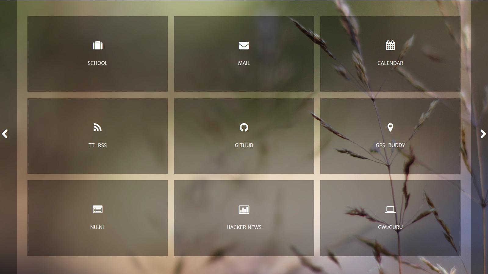
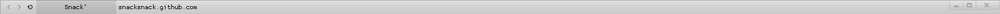
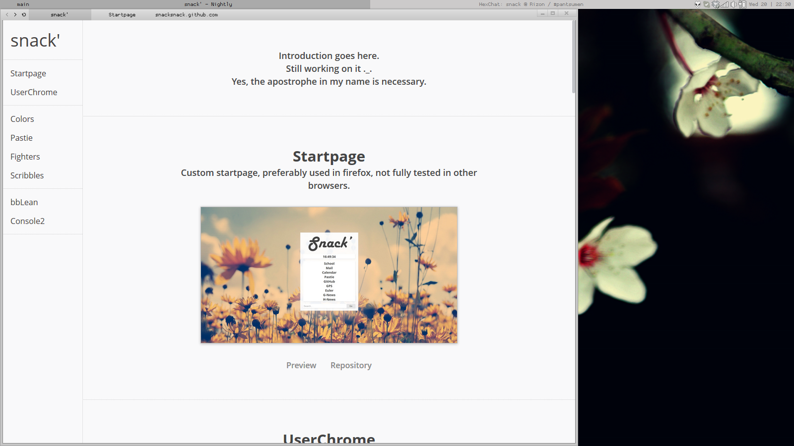
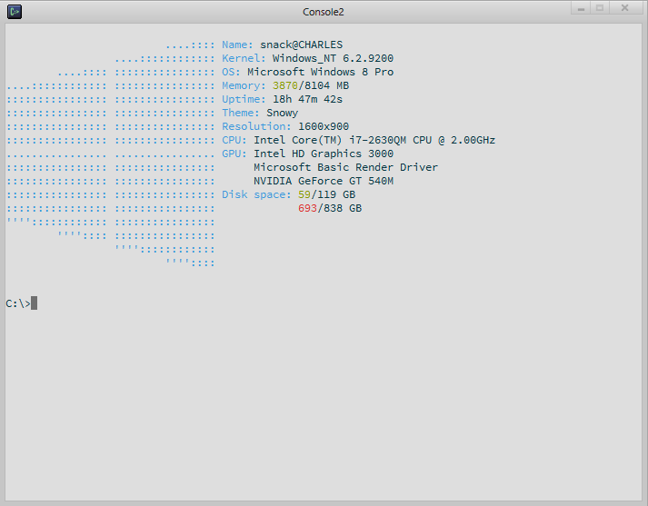

I use javascript only to enhance the page, not to track you.
Don't trust me? Check the source:
'js.js'
Introduction goes here.
Still working on it ._.
Yes, the apostrophe in my name is necessary.
Startpage
Custom startpage, preferably used in firefox, not fully tested in other browsers.

UserChrome
Custom userChrome.css, only used in firefox and shouldn't require anything.
Still very buggy, so I'm still working on it daily.
Note; It's transparent so it takes your default window color (which is why it's grey for me).

Colors
Colors script, written in Ruby, supports table, list and custom colors.

Pastie
Pastie script, posts files to pastie.org

Fighters
Ruby script, some weird fencers move from side to side while fighting and shouting insults at each other.
Supports colors, speed, movement, and timer options.

Scribbles
I tend to write a lot of crap in Ruby, I keep them in a repository for myself or anyone that cares.
Current list of items;
- euler
- feels
- calc.rb
- life.rb
- maze.rb
- poker.rb
- rename.rb
- rock_paper_etc.rb
- testing.rb
- tick_tack_tow.rb
Ircbot
Ircbot, written in java. It has extensive features and tries to be a backup for others.
Functions config snippet*
"functions": {
"greet": {
"enabled": "false",
"visible": "public"
},
"html": "true",
"lastfm": "true",
"weather": "true",
"quote": "true",
"tell": "true",
"translate": "false",
"romaji": "false",
"search": {
"enabled": "true",
"default": "g"
}
}
Databasemanager snippet*
private Mongo mongo;
private DB db;
private DBCollection weather_collection, lastfm_collection, quote_collection, tell_collection;
private static DatabaseManager instance = null;
public static DatabaseManager getInstance() {
if (instance == null) {
Monitor.print("~INFO Initializing database");
instance = new DatabaseManager();
Monitor.print("~INFO Initialized database");
}
return instance;
}
bbLean
Light bbLean theme, based on bb_crim by apathyrecharge.
Basically inverted his colors and removed the red.

Console2
Console2 settings file, light colors and default paths set.
Best used with an autorun.cmd and simple cmd.exe

 snacksnack
snacksnack{kind=link}
{kind=link}
{kind=link}
{kind=link}